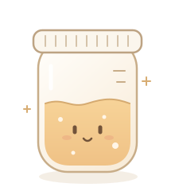

先看懂，再行动
每屏只强调一个主任务。状态、最近记录和下一步同处一个视线范围；次要操作降低权重。
Small care. A little joy.
温暖的视觉，清楚的下一步。
为日常观察、记录与养护，建立一套柔和、
有秩序，也经得起使用的界面语言。

从“笔记式平铺”转向“任务优先的日常工具”。
柔和来自比例、留白和反馈，而非堆叠装饰。
每屏只强调一个主任务。状态、最近记录和下一步同处一个视线范围；次要操作降低权重。
暖白、杏橙与圆润轮廓构成亲近感。情绪只出现在欢迎、记录完成和空状态，数据区保持安静。
按下、加载、成功、失败均有明确反馈。保留用户输入，让取消、重试和返回始终可预期。
| 旧稿中的限制 | 新版决定 | 落地规则 |
|---|---|---|
| 所有组件统一直角 | 按角色分配圆角 | 控件 12px；信息卡 20px；大容器 28px；胶囊仅用于标签与分段器。 |
| 橙色同时承担品牌与功能 | 品牌橙与操作橙分工 | 原始渐变只用于标识与品牌展示；主要按钮使用深橙纯色。 |
| 细边框分割每一层内容 | 先用空间和底色分组 | 静态卡片用低对比边界；输入框、交互边界使用更清楚的描边。 |
| 正文个性字体覆盖全部内容 | 工具信息提高辨识度 | 长文和表单使用系统中文黑体；方圆体用于短句；Rubik 用于数值。 |
| 只有少量按钮与输入示例 | 完整覆盖流程与状态 | 补充底部导航、记录面板、日期切换、单位设置、错误恢复及动效规则。 |
适用边界 本规范以酵种观察与日常养护工具为场景假设，给出新的 UI 与交互提案。页面中的天数、温度、配比和提醒均为演示数据；业务判断、养护内容与功能范围仍需产品确认。
参考图承担设计依据，不直接成为产品资产。
点击缩略图可查看对应参考。
参考中的柔光与表情，让工具界面有了情绪。新版把它们留给品牌区和轻量反馈，把对比度、信息密度与明确操作留给日常使用。
| 来源 | 采纳 | 调整 / 舍弃 | 对应章节 |
|---|---|---|---|
| R01–R02 · 图标构建 | 圆润体块、少量叠层与柔和橙色 | 不沿用灰底厚重拟物与全图标光晕；改为统一 SVG 线性图标。 | 07 |
| R03 · 提示面板 | 单一主行动、底部操作区 | 缩短说明；警示基于可验证条件，避免把“未记录”直接判断为“不安全”。 | 09 / 11 |
| R04 · 酵种主页 | 角色陪伴与轻量布局 | 压缩无效空白；补齐当前状态、最近记录与有文字的导航；红色只给危险操作。 | 07 / 10 |
| R05 · 日记 | 按日查看与提示卡分层 | 统一日期入口与空记录行动；不使用低对比浅黄色正文。 | 10 / 11 |
| R06 · 计算器 | 分段导航、数量步进器 | 结果保持清晰可读；不借模糊遮挡制造付费焦虑；边界与单位始终可见。 | 08 / 10 |
| R07 · 设置 | 分组列表、尾部值与行内开关 | 收敛图标色彩；补充系统通知权限被拒的说明；低频管理项移到底部。 | 08 / 10 |
| R08 · 专注工具概念 | 奶油表面、进度信息和整齐的卡片比例 | 不移植无关的任务统计；发酵进度不伪装为精确倒计时。 | 06 / 08 |
| R09 · 渐变海报 | 温暖色相与纵向节奏 | 大面积高饱和渐变仅作品牌展示；不进入表单、日志和计算结果底层。 | 04 / 06 |
| R10 · 柔光卡片 | 软边界、暖色柔光、极简表情 | 光晕限单处低频出现；正文放在实色面板上，避免背景干扰。 | 06 / 07 |
保留旧稿中的原始矢量路径与五节点渐变。
不重新排字，不改动 j 上方的像素细节。
显示宽度不小于 112px；四周净空 ≥ 标识显示高度的 ¼。示例中虚线用于说明净空，实际界面不显示。
默认放在暖白或白色上。深色背景用独立反白文件。品牌口号作为独立文字排版，不与标识挤在同一安全区。
不拉伸、倾斜、裁切或加投影；不给路径添加描边。应用图标是另一个资产，不直接裁切文字 Logo。
点击色块复制 HEX。
先选语义角色，再选颜色。
品牌主橙 #FF6B25 保持不变。功能按钮另设深橙 #B84A16，搭配白字；品牌橙配深棕文字，避免橙底白字对比不足。
页面以暖白与白色为主。橙色每屏优先留给当前主行动和选中态；成功、提醒、错误使用各自的语义色。
| 推荐组合 | 对比度 | 用途 / 约束 |
|---|
对比度按 sRGB 相对亮度计算并四舍五入；这里验证的是指定色对，不代表整个产品已经通过无障碍认证。低对比边线只能承担装饰分组，不能作为唯一可操作线索。
收敛字重与字体角色。
字号以下均为 CSS px / 设计逻辑像素。
气泡、顶部和高度，
一次只记录你看见的变化。
24.5 °C 1 : 2 : 2
数字使用等宽数字特性 tabular-nums。数值与单位之间留 4px，千位分组一致，小数不超过业务需要。
慢慢来，好事正在发生。
延续旧稿的方圆体，收敛到陪伴语与短说明。长段落、错误信息和工具数据不使用装饰性字体。
| 层级 | 移动端 / 桌面端 | 行高 / 字重 | 用途 |
|---|---|---|---|
| 品牌展示 Display | 36 / 56 | 1.2 / 中文 500、英文 300 | 欢迎与品牌区域；本规范首屏为文档展示特例。 |
| 页面标题 H1 | 28 / 32 | 1.3 / 600 | 每个业务页 1 个；最多两行。 |
| 分区标题 H2 | 20 / 24 | 1.4 / 600 | 区块与面板标题。 |
| 组件标题 H3 | 17 / 18 | 1.4 / 500 | 卡片、列表项与设置行。 |
| 正文 Body | 16 / 16 | 1.65 / 400 | 长文、表单说明；每行中文约 22–38 字。 |
| 操作 Label | 15 / 15 | 1.4 / 500 | 按钮、标签、分段器；不依赖字重区分选中态。 |
| 辅助 Caption | 13 / 13 | 1.5 / 400 | 时间与辅助说明；必要信息不低于 13px。 |
滑块只改变下方 Fredoka 示例。业务界面不提供字体设置。
A little care, every day.
字体取舍：不继续分发旧 HTML 内来源未核验的“萍方”嵌入文件，中文工具信息回到系统字体。Fredoka、Rubik 沿用附件并保留 OFL；方圆体沿用附件，用于本提案预览，后续发布按原字体授权核验。不要用浏览器模拟缺失字重。
层级依次来自：布局 → 间距 → 底色 → 边界。
阴影只在需要表达层叠时出现。
| 视口 | 栅格 / 边距 | 行为 |
|---|---|---|
| 320–767px / 移动端 | 4 栏；左右 20px（320px 时 16px）；栏距 12px | 单列任务流；底栏 64px + safe-area；主按钮可铺满；不出现页面级横向滚动。 |
| 768–1199px / 中屏 | 8 栏；左右 32px；栏距 20px | 最多双列；主内容优先，辅助说明跟随；底栏可转侧栏。 |
| ≥1200px / 桌面端 | 12 栏；最大内容宽 1200px；栏距 24px | 主内容 8 栏 + 侧说明 4 栏；表单宽 480–640px；弹窗宽 480px。 |
图标与文字 8px；标签与控件 8px；同组控件 16px；卡片间 16–24px；分区间 32–48px。相关性越强，间距越小。
品牌插画下可用一次暖橙径向柔光，覆盖不超过容器 ⅓；不放在正文、输入和错误信息之后；移动端禁用持续大模糊动画。
内容底部补足底栏或操作区高度；键盘打开时优先露出当前输入与错误；不要把提交按钮压在系统安全区。
图标传达功能，角色传达情绪。
二者使用各自的尺度与出现时机。
24 × 24 网格；2px 描边；圆端点与圆连接。常规图标 20/24px；底栏 24px。填充色只用于选中底座与语义背景。
底部导航始终带标签。陌生图标不单独承担操作；图标按钮必须有可读名称与 44 × 44px 点击区域。
普通图标为次级棕灰；选中为深橙；危险为错误红。设置列表不把每项都做成不同糖果色。
欢迎页、首次记录、完成状态可使用酵种罐表情。姿态简单、线条柔和，单屏最多一个主体；插画高度 96–180px。常规工具页不让角色挤占数据空间。
此处酵种罐为本次新绘制的概念资产，区别于原始文字 Logo。角色不替代状态文字，不通过难过表情或责备文案催促用户。
尺寸、状态、反馈和键盘行为共同构成组件。
以下示例可直接操作。
示例记录仍保留。
| 类型 / 尺寸 | 默认与悬停 | 按下 / 加载 / 禁用 |
|---|---|---|
| 主按钮 48px 高 / 水平 20px / 半径 12px | 深橙底白字；hover #9D3D10；同一任务区最多 1 个。 | pressed #84310B；loading 保宽、旋转图标、禁止重复提交；disabled 灰底棕灰字、保留原因。 |
| 次按钮 / 文字按钮 同主按钮高；最小触达 44px | 次按钮白底、深色描边；文字按钮无底色，hover 增加浅底。 | pressed 加深浅底；键盘焦点为 2px 蓝色外环 + 3px 间隔。 |
| 危险操作 | 错误红字或红底；从主任务区移入更多菜单。 | 可恢复删除先执行并提供 8 秒撤销；不可恢复删除二次确认、明确对象与后果。 |
24.0 °C
切换单位只改变显示，内部原始值保持不变。
| 组件 | 规格 | 行为 |
|---|---|---|
| 文本输入 | 高 48px；内边距 14px；半径 12px；边线 #9B8D82；字号 16px。 | 标签始终在外部；首次提交或编辑后失焦校验；报错就近说明并保留输入；提交聚焦首个错误。 |
| 开关 | 可见轨道 44 × 26px；触达 44 × 44px；开与关同时改变位置和底色。 | 即时生效；需要系统权限时先解释再请求，拒绝后仍保持关闭并提供设置入口。 |
| 分段选择 | 高 44px；底座半径 12px；选中白底 + 深橙字 + 边界。 | 2–4 个互斥选项；Tab 进入、方向键切换；不用于跳转不同层级的页面。 |
| 数字步进 | 增减按钮触达 44px；中间数值可读；范围在说明中明确。 | 单击单步；到上下限禁用对应按钮；输入支持数字键盘；不循环跳转。 |
同一套状态词典 default → hover → pressed → focus-visible → loading → success / error；selected、disabled 按组件需要补充。触屏无 hover，不把必要说明藏在 hover 里。
以“观察 → 记录 → 回看”为核心链路。
任何反馈都应指向明确的下一步。
| 场景 | 必须发生的行为 | 边界处理 |
|---|---|---|
| 打开面板 | 移动端优先底部面板，最大高 90dvh；桌面居中 480px；背景不可交互，焦点移入并限制在面板内。 | 长内容面板内部滚动；标题与关闭按钮可见；关闭后焦点回到触发按钮。 |
| 取消 / 返回 | 关闭、Esc、点遮罩都遵循同一关闭逻辑；未修改直接关闭。 | 有未保存修改时显示“继续编辑 / 放弃修改”；不因误触丢失数据。 |
| 提交 | 即时显示按下与忙碌状态；提交中按钮保宽、禁止重复发送；成功更新数据后关闭面板。 | 失败保留输入，面板内持续展示“保存失败，请重试”；不只用易消失的 Toast。 |
| 慢任务 | 约 300ms 后仍未完成时展示加载提示；约 10 秒时补充“仍在处理中”。 | 网络中断给出重试；请求具有幂等键，避免超时重试形成重复记录；返回后可恢复草稿。 |
| 页面跳转 | 返回恢复先前筛选、日期与滚动位置；主导航状态稳定。 | 删除当前对象时跳到对象列表并播报；空列表提供新建入口。 |
| 提醒权限 | 用户主动开启后再请求系统权限；允许后才显示已开启。 | 拒绝时说明原因与设置路径；不循环弹系统权限框；通知能力不阻塞记录。 |
| 危险操作 | 可恢复删除提供撤销；不可逆删除说明对象、数量与后果，确认按钮写“删除这条记录”。 | 取消优先获得焦点；不可逆危险按钮不作为回车默认提交。 |
按钮背景、选中底座、开关即时响应；按下不大幅缩放和跳动。
标签页与提示用透明度过渡；ease-out；同屏变化不连续闪烁。
位移 16px + 渐显；离开 180ms。减少动态效果时取消位移与平滑滚动。
可交互的移动端缩略示例。
实际组件尺寸按第 08 章执行。
标题确认对象；最近记录建立上下文。插画作为轻量陪伴，把主要空间留给观察摘要和“记录观察”。
可验证：校验 → 加载 → 错误保留输入 → 重试成功。此处只演示页面状态，不连接真实服务。
| 页面 | 保留重点 | 不应出现 |
|---|---|---|
| 酵种主页 | 当前对象、最近记录、观察摘要与记录入口；未记录时仍可开始。 | 大面积空白配无标签图标；将删除伪装成主要行动。 |
| 日记 | 明确日期、可操作的前后切换、时间线与空日提示；未来日期不允许继续前进。 | 只显示“Day N”而无日期；空白区域没有解释或入口。 |
| 工具 | 输入范围、单位、公式说明与可见结果；非精确业务数据注明估算。 | 模糊结果、自动跳至订阅；将演示配比呈现为通用养护建议。 |
| 设置 | 通知、单位、对象管理分组；当前值尾随显示；次要解释就近出现。 | 每行都用独立鲜艳色；开关与系统权限实际状态不一致。 |
观察事实，解释原因，给出行动。
不责备用户，也不夸大确定性。
先记下看到的变化，下次就能一起回看。
记录观察 →空状态 / 说明“为什么空”与“如何开始”网络连接中断，填写内容已保留。连接恢复后可以重试。
重新保存 →错误状态 / 任务区域持续展示可以在今天的日记里找到这条记录。
查看日记 →成功状态 / 确认结果与去向| 状态 | 界面规则 | 文案建议 |
|---|---|---|
| 首次使用 / 空数据 | 一段说明 + 一个主行动；不用空骨架伪装内容。 | “还没有酵种档案。给它起个名字，开始第一条记录。” |
| 加载 | 初次加载可用结构一致的静态骨架；已有内容刷新时保留旧内容并标明更新时间。 | “正在加载记录…”；耗时较长时“仍在加载，可以稍后重试”。 |
| 离线 / 异常 | 展示最近同步时间；允许浏览已缓存内容；未实现离线保存时必须明确。 | “当前离线，显示上次同步的内容。”不宣称已保存到云端。 |
| 校验失败 | 错误定位到字段；告知可修正范围。 | “请输入 1–12 个字符的名称。”避免只写“输入有误”。 |
| 长内容 / 缺失值 | 标题最多两行后提供详情；备注保留换行；缺失数字显示“未记录”。 | 不用 0 替代未知值；重要错误不截断。 |
| 长时间未记录 | 陈述记录事实，给观察或了解入口；异常业务判断需独立验证。 | “你已经 7 天没有添加记录了。先观察一下现在的变化。” |
| 权限关闭 / 功能受限 | 说明限制原因、继续可用的能力与解除方式；保持普通记录流程可用。 | “系统通知未开启，提醒不会送达。你仍可手动记录。” |
“小麦饿坏了！”
“操作失败，请稍后再试。”
“距离上次记录已过 7 天，先看看现在的变化。”
“没有保存成功，填写内容已保留。请检查连接后重试。”
把可读、可达与可恢复作为验收目标。
以下为产品实现要求，不是认证声明。
正文与按钮文字至少 4.5:1；大号文本至少 3:1；关键控件边界、焦点与有意义图形至少 3:1。
业务交互目标采用至少 44px 的宽高；相邻小图标不挤在一起；手势操作必须有按钮替代。
文字放大后不截断关键内容，按钮允许增高；在 320px 视口检查重排；双列改为单列。
| 对象 | 实现要求 | 验收方式 |
|---|---|---|
| 键盘 | Tab 顺序跟随视觉顺序；Enter / Space 触发；选项卡支持左右箭头与 Home / End；不依赖 hover。 | 从页首走完一次记录流程；面板关闭后焦点回触发处；焦点环不被裁切。 |
| 读屏 | 语义标题与标签；状态用 aria-live；开关提供名称与 checked；选项卡配对 tabpanel。 | 读出对象、当前页、字段错误与保存结果；装饰图像不重复播报。 |
| 颜色 / 动态 | 状态带文字或图标；尊重 prefers-reduced-motion；不闪烁、不强制循环角色动画。 | 灰度下仍识别状态；减少动态模式下无大位移与强制平滑滚动。 |
| 移动端 / 安全区 | 触达 ≥44px；输入字号 ≥16px；底部留 env(safe-area-inset-bottom)；面板高度用 dvh。 | 检查窄屏、横屏、虚拟键盘与底栏共存；提交区不被遮住。 |
| 长文与本地化 | 支持中文长名称和英文长单词换行；单位与数值绑定；日期使用明确年月日。 | 测试 12 字名称、两行标题、长备注、缺失数据与不同小数位。 |
本次交付验证范围记录在下一章。业务端上线前还应使用真实设备与读屏软件复核权限、键盘和网络场景。
视觉变量先统一，组件行为再复用。
把需要确认的业务问题留在清楚的位置。
index.html完整网页文档assets/style.css · app.js文档样式与示例交互assets/tokens.css · tokens.json语义色、间距、圆角、动效变量assets/brand · icons原始 Logo、反白版、新绘概念插画与 SVG 图标assets/fonts · references预览字体、字体说明与 10 张参考缩略图README.txt · QA.txt使用方法、来源与实际验证记录规范正文离线可读。组件与原型均为状态演示，不代表后端已实现；原型数据只在当前页面内存中保留，刷新后重置。另附单文件 HTML，已嵌入所需资源。
.primary-action {
color: var(--on-action);
background: var(--action-primary);
min-height: 48px;
padding-inline: var(--space-20);
border-radius: var(--radius-control);
transition: background var(--duration-fast)
var(--ease-out);
}